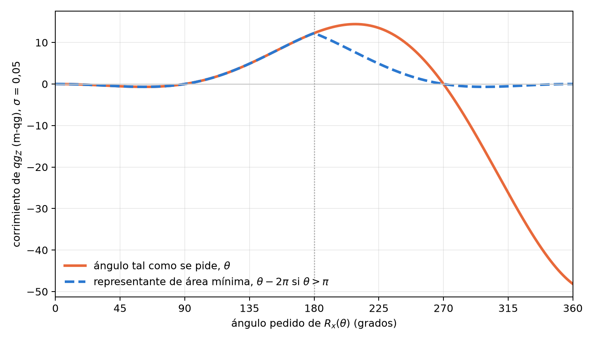

2 Compuertas nativas, álgebra cerrada y el operador universal
El capítulo 1 describió el estado de un qubit en unidades qg y redujo todas sus lecturas a una sola probabilidad, \(p_0\), con el mili-qang como escala de trabajo. Este capítulo hace lo mismo con las operaciones: cómo se prepara un estado a partir de su probabilidad o de su lectura en m-qg, cómo se escribe cualquier compuerta de un qubit como función algebraica de \(qg_Z\), por qué su acción sobre las poblaciones es la ecuación de probabilidad del capítulo 1, cómo se extiende la idea a sistemas de más niveles, y qué reglas de compilación se desprenden cuando el error de una compuerta, medido en m-qg, depende de su ángulo.
2.1 La compuerta elemental \(R_{qg}\)
La operación básica es preparar, desde \(|0\rangle\), el estado de sesgo polar \(q\): una rotación \(R_y(\theta)\) con \(\theta=\arccos q\). qang la ofrece como compuerta nativa en los tres kits de desarrollo más usados (§6):
- Qiskit:
RQangGate(q)yFullRQangGate(q, φ), esta última con la fase azimutal. - Cirq:
rqang_gate(q), construida sobrecirq.ry, yfull_rqang_gate(q, φ), unaMatrixGatecon la misma convención que la compuertaUde Qiskit. - PennyLane: el mismo par, diferenciable respecto de \(q\).
Por la ecuación de probabilidad (Sección 1.3), el parámetro de la compuerta se puede fijar desde cualquiera de las lecturas: para obtener una probabilidad \(p_0\) se usa \(q=2p_0-1\), y para una lectura de \(m\) m-qg, \(q=m/1000\). Pedir \(p_0=0{,}75\) o \(+500\) m-qg es pedir la misma compuerta, \(R_y(60^\circ)\).
Las tres preparan exactamente el mismo estado para un mismo valor de qg, lo que se verifica tanto con las probabilidades medidas como con la fidelidad del vector de estado. La compuerta acepta parámetros simbólicos (Parameter de Qiskit, símbolos de sympy), de modo que puede formar parte de circuitos parametrizados.
Una variante con signo, SignedRQangGate, aplica \(R_y(s\cdot\arccos q)\) con \(s=\pm1\): es la forma de compuerta del signo de rama del capítulo 1, y prepara el mismo estado que la compuerta completa con \(\varphi=0\) o \(\pi\) (§68).
2.2 El operador universal en qg
Toda compuerta de un qubit es, salvo una fase global, \(U(\theta,\varphi,\lambda)\). Con \(q=\cos\theta\) los semiángulos se vuelven algebraicos,
\[ \cos\frac{\theta}{2}=\sqrt{\frac{1+q}{2}},\qquad \sin\frac{\theta}{2}=\sqrt{\frac{1-q}{2}}, \]
y la compuerta universal queda escrita sin funciones trigonométricas en \(q\):
\[ U_3^{qg}(q,\varphi,\lambda)= \begin{pmatrix} \sqrt{\dfrac{1+q}{2}} & -e^{i\lambda}\sqrt{\dfrac{1-q}{2}}\\[2ex] e^{i\varphi}\sqrt{\dfrac{1-q}{2}} & e^{i(\varphi+\lambda)}\sqrt{\dfrac{1+q}{2}} \end{pmatrix}. \]
La amplitud depende solo del sesgo polar y las fases quedan desacopladas en los factores \(e^{i\varphi}\) y \(e^{i\lambda}\). Una consecuencia inmediata es la matriz de transición, las probabilidades \(|U_{ij}|^2\):
\[ T(q)=\begin{pmatrix}\tfrac{1+q}{2}&\tfrac{1-q}{2}\\[0.5ex]\tfrac{1-q}{2}&\tfrac{1+q}{2}\end{pmatrix}, \]
doblemente estocástica, racional en \(q\) e independiente de las fases. Desde el punto de vista de la medición en la base computacional, toda compuerta de un qubit es un canal binario simétrico de parámetro \((1-q)/2\).
2.3 La compuerta como ecuación de probabilidad
La matriz de transición es la ecuación de probabilidad del capítulo 1 escrita para una operación. Con \(p_0=(1+q)/2\),
\[ T=\begin{pmatrix}p_0&1-p_0\\1-p_0&p_0\end{pmatrix},\qquad p_0=\frac{1000+m}{2000}: \]
la acción de cualquier compuerta de un qubit sobre las poblaciones queda fijada por un solo número, su lectura en m-qg. La identidad y \(Z\) están en \(+1000\) m-qg (no mueven poblaciones), \(X\) en \(-1000\) (las intercambia) y la Hadamard en \(0\) (las iguala). Las fases \(\varphi\) y \(\lambda\) no aparecen: son invisibles para una medición en \(Z\) y solo se revelan al componer compuertas, como muestra el capítulo 3.
La lectura entrópica también tiene su versión para operaciones. La capacidad del canal binario simétrico de parámetro \((1-q)/2\) es \(1-H\big((1-q)/2\big)\), y como \(H\) es simétrica, \(H\big((1-q)/2\big)=H(p_0)=qg_S\):
\[ C = 1-qg_S . \]
Una compuerta en un polo (\(qg_S=0\)) transmite un bit completo por cada uso; la Hadamard (\(qg_S=1\)) no transmite nada de la base computacional a sí misma.
2.4 Verificación contra las bibliotecas estándar
La fórmula se comprobó contra la compuerta U de Qiskit en 2000 compuertas aleatorias, con una diferencia máxima de \(3{,}5\times10^{-14}\) (§166). Las compuertas habituales aparecen en valores simples:
| compuerta | \(q\) | m-qg | \(\varphi\) | \(\lambda\) |
|---|---|---|---|---|
| \(I\) | \(1\) | \(+1000\) | \(0\) | \(0\) |
| \(X\) | \(-1\) | \(-1000\) | \(0\) | \(\pi\) |
| \(Z\) | \(1\) | \(+1000\) | \(0\) | \(\pi\) |
| \(H\) | \(0\) | \(0\) | \(0\) | \(\pi\) |
La tabla tiene una lectura en qg: \(X\) es el único caso de sesgo \(-1\) (invierte el qubit), \(Z\) y la identidad no cambian las poblaciones (\(q=1\)) y difieren solo en una fase, y la Hadamard lleva al ecuador (\(q=0\)).
2.5 Más allá del qubit: la subálgebra de Cartan
Para un sistema de \(d\) niveles (un qudit), el análogo de \(\sigma_z\) no es una sola matriz sino la subálgebra de Cartan de \(\mathfrak{su}(d)\): las \(d-1\) matrices de Gell-Mann generalizadas diagonales,
\[ \lambda_k=\sqrt{\frac{2}{k(k+1)}}\;\operatorname{diag}(\underbrace{1,\dots,1}_{k},-k,0,\dots,0),\qquad k=1,\dots,d-1, \]
normalizadas con \(\operatorname{Tr}(\lambda_j\lambda_k)=2\delta_{jk}\). Sus valores esperados son lineales en las poblaciones y las determinan:
\[ p=\frac1d+\frac12\sum_{k=1}^{d-1}\langle\lambda_k\rangle\,\operatorname{diag}(\lambda_k). \]
Para \(d=2\) queda una sola matriz, \(\lambda_1=\sigma_z\), su valor esperado es \(qg_Z\) y la fórmula se reduce a \(p_0=\tfrac12+\tfrac12\,qg_Z\): la ecuación de probabilidad del capítulo 1. Esta es la generalización natural de la unidad: un vector de \(d-1\) valores qg medibles en la base computacional, cada uno expresable en m-qg, que fija las \(d\) probabilidades del mismo modo que \(qg_Z\) fija \(p_0\) (§166).
Conviene separar la definición de la utilidad. La pregunta de si una lectura de tres niveles le da a qang una ventaja se planteó con un caso concreto, la fuga de un transmon al nivel \(|2\rangle\) en una memoria de código de superficie, y la respuesta fue negativa: leer \(|2\rangle\) como 1 suele ser correcto, y declarar el qubit borrado descarta esa información (§70). qang sigue siendo una construcción de qubits; la generalización a qudits es una identidad, no una ventaja demostrada.
2.6 El principio de área de pulso mínima
En los dispositivos con compuertas fraccionarias (rotaciones \(R_X(\theta)\) o \(R_{ZZ}(\theta)\) de ángulo continuo), el área del pulso crece con \(|\theta|\), y con ella crecen el error por mala calibración de amplitud y la relajación durante el pulso. En unidades qg, un error de amplitud aleatorio de desviación \(\sigma\) amortigua la lectura como
\[ qg_Z=\cos\theta\;e^{-\theta^2\sigma^2/2}, \]
y uno fijo \(\varepsilon\) da \(\cos(\theta(1+\varepsilon))\), con error de primer orden \(1000\,\varepsilon\,\theta\sin\theta\) m-qg. La sensibilidad \(d\,qg_Z/d\theta=-\sin\theta\) es máxima en \(\pi/2\) y se anula a primer orden en \(0\) y \(\pi\) (§160). Es el presupuesto de error en mili-qang del capítulo 1 (Figura 1.4), y la escala hace comparables el error de la compuerta y el ruido de disparo de la lectura: con \(\sigma=0{,}05\), el corrimiento de una \(X\) (12,3 m-qg) es del orden de la resolución de \(10^4\) disparos en el ecuador (10 m-qg).
Cada compuerta tiene representantes más cortos. \(R_X(\theta)=-R_X(\theta-2\pi)\) tiene período \(2\pi\) salvo una fase global, y la Figura 2.1 muestra lo que se gana: pedir \(R_X(324^\circ)\) tal cual corre la lectura \(-31{,}7\) m-qg, mientras que su representante \(R_X(-36^\circ)\), la misma compuerta, la corre \(-0{,}4\) m-qg.

Más interesante: \(R_{ZZ}(\theta+\pi)=R_{ZZ}(\theta)\,(-i\,Z\otimes Z)\), y \(Z\otimes Z\) son dos rotaciones \(R_Z(\pi)\) virtuales, sin costo en los procesadores superconductores. Así \(R_{ZZ}\) tiene período \(\pi\) y su área nunca necesita superar \(\pi/2\). La función minimal_area_circuit reescribe un circuito con esos representantes y conserva el unitario exactamente, fase global incluida.
En un modelo de QAOA de 4 qubits con errores proporcionales al área (150 instancias), reducir los ángulos módulo \(2\pi\) bajó el área total 4,4× y el error (distancia de variación total) 4,1×; usar además el período \(\pi\) de \(R_{ZZ}\) lo bajó 1,14× más. La predicción registrada era 1,5× y falló: la mitad del área, la de las rotaciones \(R_X\), ya era mínima tras la primera reducción. El resultado general se mantiene: el error sigue al área. Dos precisiones de alcance: en los procesadores IBM las rotaciones comunes de un qubit son \(R_Z\) virtuales más pulsos \(\sqrt X\) fijos, de duración independiente del ángulo, de modo que la regla aplica a las compuertas fraccionarias; y el beneficio depende de cuánto escala el error con el área en cada plataforma.
2.7 Pantalla de exposición antes de correr
El filtro de simetría (capítulos 20–21) descarta los disparos que salieron del sector de peso de Hamming conservado. Pero un decaimiento que ocurre mientras parte del estado está fuera del sector puede volver a entrar y pasar el filtro. Eso sugiere una medida previa, calculable sin ruido: la exposición, la población fuera del sector inmediatamente después de cada compuerta de dos qubits (qang.sectors.sector_exposure).
Sobre 16 compilaciones de un paso de una cadena XXZ, la correlación de rangos entre exposición y fuga de T1 fue exactamente 0,80, el umbral registrado, y las compilaciones de exposición nula eliminaron al menos 98% del error de T1 (§68):
| compilación | exposición | fuga de T1 |
|---|---|---|
| 3 CNOT | 0,42 | 16–52% |
| Mølmer–Sørensen, ZZ por cambio de base | 0,16–0,24 | 20–78% |
| rotaciones Mølmer–Sørensen | 0,0006–0,047 | 0,4–17% |
| que conserva el número | 0 | 0,0–2,0% |
La pantalla ordena compilaciones, no pasos de tiempo: dentro de una misma compilación la relación es más débil. Su valor práctico es elegir la compilación antes de gastar disparos.
2.8 Un único orden de qubits para todos los kits
Un detalle práctico que causa errores silenciosos: Qiskit escribe el qubit 0 a la derecha de la cadena de bits, mientras que Cirq, PennyLane, Braket y pytket lo ponen primero. qang.interop convierte cualquier resultado a \(\{(b_0,\dots,b_{n-1}):\text{cuenta}\}\) y calcula sobre esa forma las lecturas qg: \(qg_Z\) por qubit con su error, el filtro y la entropía del registro (§130). Un estado W de 3 qubits muestreado con 20 000 disparos en cada kit dio \(qg_Z\) entre 0,316 y 0,343 (ideal \(1/3\)), todos los disparos en peso 1 y entropía del registro 0,528 (ideal \(\log_2 3/3\)), igual en los tres. En mili-qang, las lecturas van de 316 a 343 m-qg frente a 333 ideales; con 20 000 disparos la resolución es \(\sigma_m=1000\sin\theta/\sqrt N=6{,}7\) m-qg, de modo que la mayor desviación (\(-17\) m-qg) está a unos 2,6σ: es ruido de disparo, no una diferencia entre kits.
2.9 Sin qang y con qang
| acción | sin qang | con qang | diferencia |
|---|---|---|---|
| preparar un estado con una probabilidad dada | calcular \(\theta=2\arccos\sqrt{p_0}\) y aplicar \(R_Y(\theta)\) | la compuerta \(R_{qg}\) recibe directamente la lectura objetivo, en qg o en m-qg | conveniencia: la compuerta física es la misma |
| describir la acción de una compuerta sobre las poblaciones | la matriz unitaria completa, con fases | una matriz de transición doblemente estocástica fijada por un número en m-qg, con capacidad \(1-qg_S\) | a favor para poblaciones; en contra para fases, que la descripción pierde (capítulo 3) |
| presupuestar el error de una compuerta fraccionaria | fidelidad de proceso | error en m-qg: de \(-31{,}7\) a \(-0{,}4\) m-qg para \(R_X(324^\circ)\) con el representante de área mínima | la mejora es del principio de área mínima; el m-qg la vuelve comparable con el ruido de disparo |
| generalizar a qudits | matrices de Gell-Mann | la subálgebra de Cartan como identidad qg | ninguna demostrada: no se encontró ventaja en leer más niveles |
Balance. En compuertas, qang es una forma compacta de escribir lo que pasa con las poblaciones, y el m-qg es la unidad en la que el error de pulso y el ruido de disparo se comparan. La ganancia medida, la del área mínima, es del principio físico, no de la unidad.
2.10 En código
import math
from qang import algebra, probability, pulse_area
U = algebra.u3_qang(0.0, 0.0, math.pi) # la Hadamard como punto (q, φ, λ) = (0, 0, π)
algebra.transition_matrix(0.3) # [[0.65, 0.35], [0.35, 0.65]]: p0 = 0.65, +300 m-qg
algebra.cartan_values([0.5, 0.3, 0.2]) # los dos valores qg de un qutrit
pulse_area.minimal_area_angle(3.5, math.pi) # (0.358, 1): RZZ(3.5) = RZZ(0.358) · (Z ⊗ Z) · fase
pulse_area.rx_qg_z_random_amplitude(math.pi, 0.05) # -0.988 en lugar de -1
probability.pulse_error_milliqang(math.pi, 0.05) # 12.3 m-qg de error en una X2.11 Resumen
- La preparación por sesgo polar es nativa en Qiskit, Cirq y PennyLane, con la misma convención y una variante con signo.
- Toda compuerta de un qubit es una función algebraica de \(q=qg_Z\) y dos fases; su matriz de transición es doblemente estocástica, no depende de las fases y es la ecuación de probabilidad del capítulo 1: un solo número en m-qg fija su acción sobre las poblaciones, y la capacidad del canal es \(1-qg_S\).
- La subálgebra de Cartan de \(\mathfrak{su}(d)\) generaliza \(qg_Z\) a qudits como identidad; no se demostró una ventaja de la lectura de más niveles.
- En compuertas fraccionarias el error sigue al área de pulso; elegir el representante más corto lo reduce (de \(-31{,}7\) a \(-0{,}4\) m-qg para \(R_X(324^\circ)\)), y el presupuesto se expresa en m-qg, la misma escala que el ruido de disparo.
- La exposición fuera del sector, calculada sin ruido, ordena compilaciones según cuánto T1 dejará pasar el filtro.